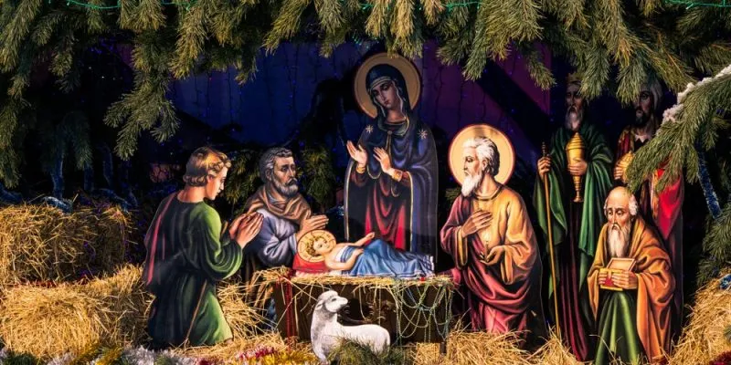

CELEBRANDO LA NAVIDAD EN NUESTRA COMUNIDAD ESCOLAR
Bienvenidos a nuestra página web, donde compartimos la alegría de la Navidad a través de las creativas obras de nuestros alumnos. Explora nuestras noticias para ver los belenes que han realizado, conoce el contexto histórico de esta festividad y descubre cómo la Navidad se vive en nuestro colegio. Además, te invitamos a participar a través de nuestro formulario, donde podrás compartir tus experiencias y reflexiones sobre esta época tan especial. ¡Juntos, celebremos el espíritu navideño!